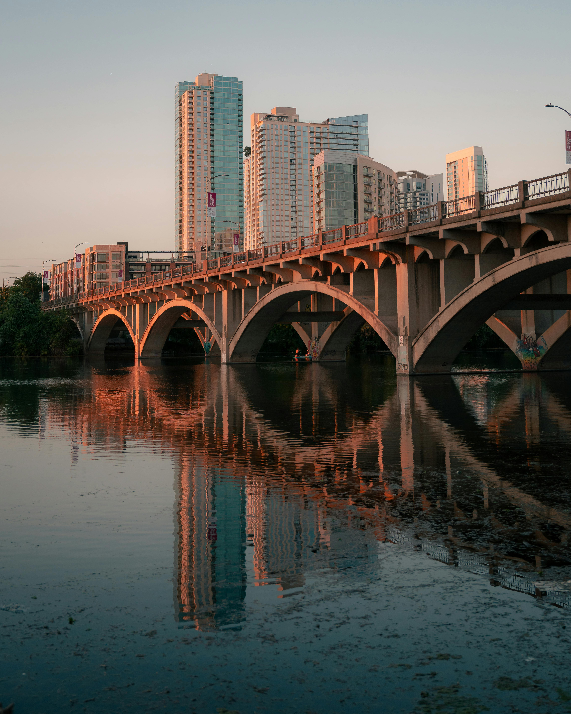

Austin the state capital of Texas
About Austin
- Austin’s population, nearing one million, reflects its status as a diverse and inclusive city.
- People from all walks of life come together to enjoy its unique cultural energy.
- From the bustling music venues on Sixth Street to the quiet, scenic beauty of the Hill Country.
- Austin is a city that seamlessly balances urban growth with the preservation of its natural and cultural heritage.
City Overview
Austin is filled with historical sites like the Texas State Capitol and has many trails and parks to enjoy. What makes Austin unique is its mix of tradition and modern progress that the city is making. Austin started as a small village called Waterloo in the 1830s and was later renamed to honor Stephen F. Austin, an essential figure in Texas history. Today, Austin attracts creative people, entrepreneurs, and tech lovers for job opportunities, as well as its lively culture and excellent quality of life.
Austin is in the center of Texas, connecting the eastern and western parts of the state. It’s a busy city with a mix of homes, businesses, and places to relax. Because of where it’s located, Austin is an important cultural and economic spot in Texas. As the city grows, its urban landscape is changing. Austin is known for its lively and welcoming vibe, its walkable downtown and various food, music, and entertainment options.
Average Income and Economy
Austin's average income reflects that it is a major tech center and one of the top places to live in the United States. In 2022, the median household income in Austin was around $110k. Austin's economy is driven by a strong tech industry, with big companies like Apple, Dell, and IBM having large operations there. Besides technology, Austin's economy benefits from its education sector, government jobs, and a booming entertainment and tourism industry. Despite Austin's fast growth, Austin remains more affordable than other major tech cities, making it appealing to professionals and families.